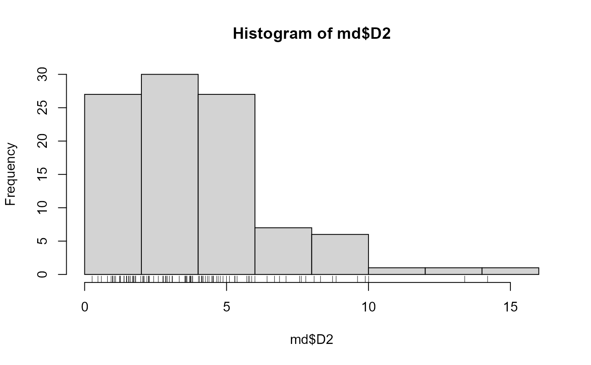

For N points, in M dimensions, get squared Mahalanobis distances to center.
mahalDistC( m, scale = TRUE, use = "complete.obs", center = c("mean", "median"), ... )
| m | A data.frame or matrix. Observations in rows. |
|---|---|
| scale | If TRUE, scale variables before getting mahalanobis distances. |
| use | Observations to use in computing covariance matrix. Gets
passed to |
| center | Type of univariate center for each variable in |
| ... | additional arguments passed to
|
A list with additional class "mahalDist" containing elements:
D2: A vector of squared Mahalanobis distances for
observations (rows) in m. Incomplete observations return
NA.
vars: A character vector with the column names from
m.
dim: The number of columns of m.
For each of N points in M dimensions, get squared Mahalanobis distances to distribution centroid. This is useful for checking for outliers in a multivariate distribution. The squared Mahalanobis distances to center for an MV normal distribution with N dimensions will follow the chi square distribution with DF equal to N.
This function is a convenience wrapper around
mahalanobis, which see. Variables are
optionally scaled before distances are computed. Incomplete
observations will return NA.
Dave Braze davebraze@gmail.com
#> [1] -2.492991e-16 -7.763061e-16 -6.873798e-16 -5.496639e-16md$D2#> [1] 6.8657220 0.9967624 2.1921789 5.7690833 1.8006491 1.7996366 #> [7] 4.1767354 0.9940790 8.0848617 3.7160511 3.5773566 5.1008230 #> [13] 10.0047741 1.2574886 0.8035108 2.4314170 7.6316181 2.2501739 #> [19] 0.4695190 2.8496532 3.8011450 4.3806302 3.0917521 5.8855054 #> [25] 8.8592957 1.5702309 2.8672084 4.8752903 4.6496856 1.4856740 #> [31] 3.5321995 4.9979474 6.6895551 8.7342380 2.0686514 1.2526548 #> [37] 3.6983858 2.7532440 5.9997638 4.5340288 1.9777428 2.2642756 #> [43] 4.5185172 4.4793054 2.2769644 0.5896595 5.7129963 5.2871988 #> [49] 4.1403004 3.5678466 2.0491749 0.9837629 4.7055502 8.3100221 #> [55] 6.4275398 2.9227218 1.7204923 1.5474492 1.7109327 5.2980136 #> [61] 1.0528103 4.2526182 7.5727741 4.3242709 2.7796400 2.8736221 #> [67] 4.1232919 3.8080036 4.5202648 2.9919090 3.6076073 9.8862185 #> [73] 2.1013865 2.5960439 9.6141974 7.7916493 14.1958047 1.6203113 #> [79] 3.7373453 1.2303183 4.7787542 1.7715933 4.0447528 1.3840071 #> [85] 5.8121648 3.7523112 1.4722260 4.1165165 0.2636546 3.3322626 #> [91] 1.3903857 13.3903289 4.0103954 1.0912081 5.3714543 0.9328289 #> [97] 3.5442657 3.0819643 7.0956649 1.6935267